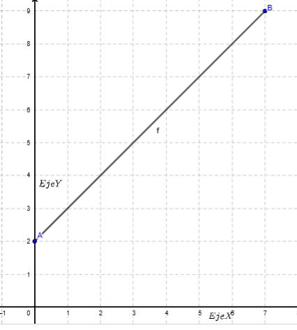

Los limites describen como se comportaun funcion cerca de un punto, en vez de ese punto. Esta simple pero poderosa idea es la base de todo calculo.
Para entender qué son los límites, consideremos un ejemplo. Empezamos con la función f(x)=x+2.
 El límite de f en
x=3 es el valor al cual se aproxima
f a medida que nos acercamos más y más a
x=3. Gráficamente, es el valor de
y al que tendemos en la gráfica de
f al acercarnos más y más al punto de la gráfica donde
x=3.
Por ejemplo, si partimos del punto
(1,3) y nos movemos en la gráfica hasta estar muy cerca de
x=3, entonces nuestro valor
y (es decir, el valor de la función) está muy cerca de
5.

Similarmente, is empezamos en (5,7) y nos movemos a la izquierda hasta estar muy cerca de x=3, el valor y muevamente estará muy creca de 5.
Por estas razones, decimos que el límite de f en x=3 es 5.
Tal vez te preguntes cuál es la diferencia entre el límite de f en x=3 y el valor de f en x=3, es decir, f(3).
Y sí, el límite de f(x)=x+2 en x=3 es igual a f(3), pero este no siempre es el caso. Para entesto, consideremos la función g. Esta función es igual a f, excepto que no está definida para x=3.
Tal como con f, el límite de g en x=3 es 5. Esto se debe a que aún podemos acercarnos mucho a x=3 y los valores de la función se acercarán muchísimo a 5.
Así que el límite de g en x=3 es igual a 5, ¡pero el valor de g en x=3 no está definido! ¡No son lo mismo!
Esa es la belleza de los límites: no dependen del valor real de la función en el límite. Describen cómo se comporta la función al acercarse al límite.